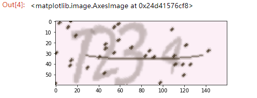

这篇博客我们来用TensorFlow来实现一个验证码识别的深度学习模型，我们的。我们会先用标注好的数据来训练第一个模型，然后再用模型来实现验证码识别
验证码
我们先看下验证码是怎么样的， 我们使用Python的captcha库来生成验证码，再用pip安装好captcha之后，就可以用代码来生成一个简单的图形验证码了。1
2
3
4
5
6
7
8
9
10
11from captcha.image import ImageCaptcha
from PIL import Image
from matplotlib import pyplot as plt
text = '1234'
image = ImageCaptcha()
captcha = image.generate(text)
captcha_image = Image.open(captcha)
plt.figure()
plt.imshow(captcha_image)
运行代码，就可以看到这样的图片了：

可以看到图片中的验证码内容就是我们所定义的text内容，这样我们就可以得到一张图片和其所对应的真是文本你，由此我们用它生成一批训练数据和测试数据
生成数据
我们先定义一个词表和其长度变量
1 | VOCAB = list(str(123456789)) |
这里 VOCAB 就是词表的内容，即 0 到 9 这 10 个数字，验证码的字符个数即 CAPTCHA_LENGTH 是 4，词表长度是 VOCAB 的长度，即 10。
接下来我们定义一个生成验证码数据的方法，流程类似上文，只不过这里我们利用np.asarray()方法将返回的数据转为了 Numpy 形式的数组：
1 | def generate_captcha(captcha_text): |
我们看一下生成的验证码的矩阵shape是(60, 160, 3),是 60 x 160 像素的验证码，每个像素都有 RGB 值，所以最后一维即为像素的 RGB 值。
接下来我们需要定义 label，由于我们需要使用深度学习模型进行训练，所以这里我们的 label 数据最好使用 One-Hot 编码，即如果验证码文本是 1234，那么应该词表索引位置置 1，总共的长度是 40，我们用程序实现一下 One-Hot 编码和文本的互相转换。即如果验证码文本是 1234，那么应该词表索引位置置 1，总共的长度是 40
one-hot编码将离散特征的取值扩展到了欧式空间，离散特征的某个取值就对应欧式空间的某个点。one-hot多应用于分类器中。
将离散型特征使用one-hot编码，确实会让特征之间的距离计算更加合理。比如，有一个离散型特征，代表工作类型，该离散型特征，共有三个取值，不使用one-hot编码，其表示分别是x_1 = (1), x_2 = (2), x_3 = (3)。两个工作之间的距离是，(x_1, x_2) = 1, d(x_2, x_3) = 1, d(x_1, x_3) = 2。那么x_1和x_3工作之间就越不相似吗？显然这样的表示，计算出来的特征的距离是不合理。那如果使用one-hot编码，则得到x_1 = (1, 0, 0), x_2 = (0, 1, 0), x_3 = (0, 0, 1)，那么两个工作之间的距离就都是sqrt(2).即每两个工作之间的距离是一样的，显得更合理。
我们用程序实现一下one-hot编码和文本的互相转化
1 | def text2vec(text): |
接下来我们构造出一批数据， x数据就是验证码的Numpy数组，y数据就是验证码文本的on-hot编码
1 | import random |
定义一个get_random_text()函数， 用于随机生成验证码文本， 然后用pickle写进硬盘。完成了生成数据的工作。
构建模型
我们用pickle.loads导入数据 ，从sklearn.model_selection 导入 train_test_split方法将模型分为三部分，训练集开发集，验证集，(比例为6：2：2):
1 | with open('data.pkl', 'rb') as f: |
接下来我们使用者三个数据集构建三个 Dataset 对象, 关于Tensorflow中的数据导入，可以参考Google官方文档
1 | # train and dev dataset |
tf.data.Dataset表示一系列元素，其中每个元素包含一个或多个Tensor对象。例如，在图片管道中，元素可能是单个训练样本，具有一对表示图片数据和标签的张量。可以通过两种不同的方式来创建数据集：
- 创建来源（例如
Dataset.from_tensor_slices()），以通过一个或多个tf.Tensor对象构建数据集。- 应用转换（例如
Dataset.batch()），以通过一个或多个tf.data.Dataset对象构建数据集。
然后我们初始化一个迭代器，并绑定到这个数据集上：
1 | # a reinitializable iterator |
tf.data.Iterator提供了从数据集中提取元素的主要方法。Iterator.get_next()返回的操作会在执行时生成Dataset的下一个元素，并且此操作通常充当输入管道代码和模型之间的接口。最简单的迭代器是“单次迭代器”，它与特定的Dataset相关联，并对其进行一次迭代。要实现更复杂的用途，您可以通过Iterator.initializer操作使用不同的数据集重新初始化和参数化迭代器，这样一来，您就可以在同一个程序中对训练和验证数据进行多次迭代（举例而言）。
接下来是模型部分了。为了简化写法，直接采用了TensorFlow中的layers模块：
1 | # input Layer |
这里我们的卷积核（patch）为3，padding模式为SAME，激活函数为relu。max_pooling的size为1，strides为2. 通过这样的卷积和池化层，数据的尺寸将会变成[sample_number, 32] 32是我们在tf.layers.cov2d中设置的输出channels数量(filter)。
经过全连接网络变换之后，y 的 shape 就变成了 [batch_size, n_classes]，我们的 label 是 CAPTCHA_LENGTH 个 One-Hot 向量拼合而成的，在这里我们想使用交叉熵来计算，但是交叉熵计算的时候，label 参数向量最后一维各个元素之和必须为 1，不然计算梯度的时候会出现问题。对于这个例子来说，我们现在未经处理label和logits的shape都是是[sameple_number, 1, 40]，我们想把它变成[sample_number, 4, 10]详情参见 TensorFlow 的官方文档：
NOTE: While the classes are mutually exclusive, their probabilities need not be. All that is required is that each row of labels is a valid probability distribution. If they are not, the computation of the gradient will be incorrect.
reshape代码：
1 | y_reshape = tf.reshape(y, [-1, VOCAB_LENGTH]) |
接下来计算Loss和Accuracy，这里的计算交叉熵公式可以参考我另外一篇博客
1 | # loss |
训练模型
1 | # train |
在这里我们首先初始化 train_initializer，将 iterator 绑定到 Train Dataset 上，然后执行 train_op，获得 loss、acc、gstep 等结果并输出。
训练结果
1 | Dev Accuracy 0.9580078 Step 0 |
验证集准确率 95% 以上。
测试
训练过程我们还可以每隔几个 Epoch 保存一下模型：
1 | # save model |
验证模型的时候Reload模型，然后进行验证：
1 | # load model |
验证之后其准确率基本是差不多的。